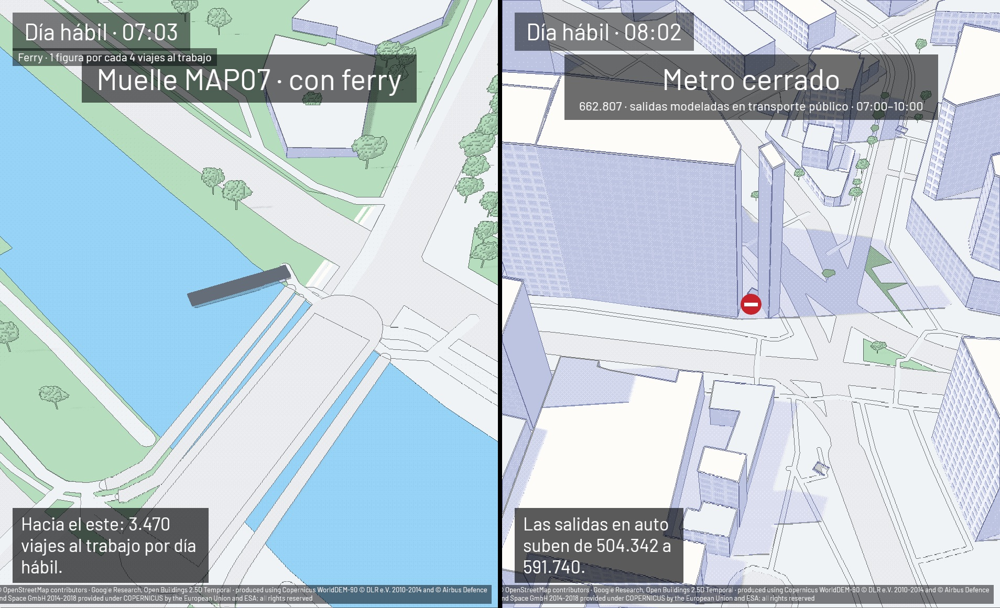

context/ Guion y decisiones · data/ Datos y replays
engine/ Motor en Rust · viz/ Visor de Santiago
Projection Codex detecta que el texto se sale del panel.
Bright-agent ajusta el texto al ancho de cada ventana.
Maitén comprueba el arreglo en Linux y publica la evidencia.

© OpenStreetMap contributors · Google Research, Open Buildings 2.5D Temporal · Copernicus WorldDEM-90 © DLR e.V. 2010–2014 and Airbus Defence and Space GmbH 2014–2018, provided by the European Union and ESA.
‹ Parámetros